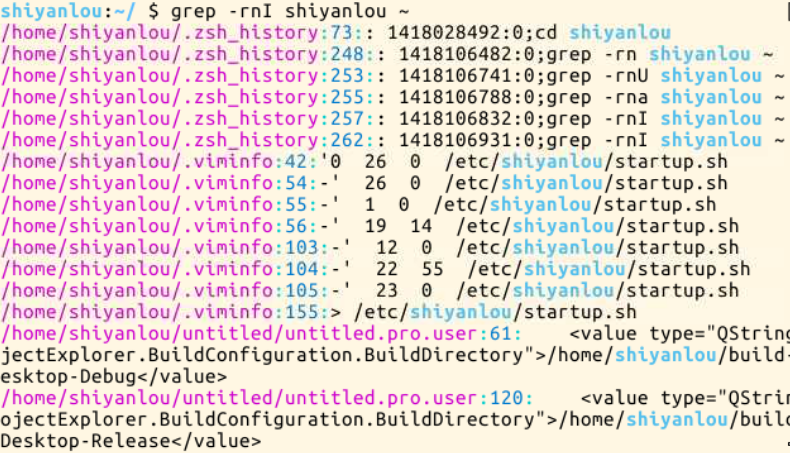
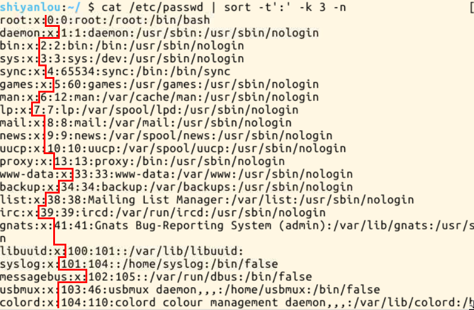

命令执行顺序的控制
1.顺序执行多条命令绍
通常情况下，我们每次只能在终端输入一条命令，按下回车执行，执行完成后，我们再输入第二条命令，然后再按回车执行...你可能会遇到如下使用场景，我需要使用apt-get安装一个软件，然后安装完成后立即运行安装的软件（或命令工具），又恰巧你的主机才更换的软件源还没有更新软件列表（比如之前我们的环境中，每次重新开始实验就得sudo apt-get update，现在已经没有这个问题了）,那么你可能会有如下一系列操作
$ sudo apt-get update $ sudo apt-get install some-tool $ some-tool
这时你可能就会想要是我可以一次性输入完，让它自己去一次执行各命令就好了，这就是我们这一小节要解决的问题了 简单的顺序执行你可以使用;来完成，比如上述操作你可以
$ sudo apt-get update;sudo apt-get install some-tool;some-tool
2.有选择的执行命令
关于上面的操作，不知你有没有思考过一个问题，如果我们在让它自动顺序执行命令时，前面的命令执行不成功，而后面的命令又依赖与上一条命令的结果，那么就会造成花了时间，最终却得到一个错误的结果，而且有时候直观的看你还无法判断结果是否正确。那么我们需要能够有选择性的来执行命令，比如上一条命令执行成功才继续下一条，或者不成功又该做出其它什么处理,比如 我们使用which来查找是否安装某个命令，如果找到就执行该命令，否则什么也不做（虽然这个操作没有什么实际意义，但可帮你更好的理解一些概念）
$ which cowsay>/dev/null && cowsay -f head-in ohch~
你如果没有安装cowsay,你可以先执行一次上述命令，你会发现什么也没发生，你再安装好之后你再执行一次上述命令，你也会发现一些惊喜
上面的&& 就是用来实现选择性执行的，它表示如果前面的命令执行结果（不是表示终端输出的内容，而是表示命令执行状态的结果）返回0则执行后面的，否则不执行，你可以从$?环境变量获取上一次命令的返回结果
学习过C语言的用户应该知道在C语言里面&& 表是逻辑与，而且还有一个||表示逻辑或，同样shell也有一个||，它们的区别就在于，shell中的这两个符号除了也可用于表示逻辑与和或之外，就是可以实现这里的命令执行顺序的简单控制。||在这里就是与&& 相反的控制效果，当上一条命令执行结果为≠0($?≠0)时则执行它后面的命令
$ which cowsay>/dev/null || echo "cowsay has not been install, please run 'sudo apt-get install cowsay' to install"
除了上述基本的使用之外，我们还可以结合这&& 和||来实现一些操作，比如
$ which cowsay>/dev/null && echo "exist" || echo "not exist"
我画个流程图来解释一下上面的流程

思考一下
上面我们讲到将&& 和||结合起来使用,那么是否以任意顺序都行了，比如上面我们是&& 在前||在后，反过来可以么，会不会有问题
二、管道
管道是什么,管道是一种通信机制，通常用于进程间的通信（也可通过socket进行网络通信），它表现出来的形式就是将前面每一个进程的输出(stdout)直接作为下一个进程的输入(stdin). 管道又分为匿名管道和具名管道（这里将不会讨论在源程序中使用系统调用创建并使用管道的情况，它与命令行的管道在内核中实际都是采用相同的机制）。我们在使用一些过滤程序时经常会用到的就是匿名管道，在命令行中由|分隔符表示，|在前面的内容中我们已经多次使用到了。具名管道简单的说就是有名字的管道，通常只会在源程序中用到具名管道。下面我们就将通过一些常用的可以使用管道的"过滤程序"来帮助你熟练管道的使用。
1.先感受一下
先感受一下管道的魅力，比如下面你想查看一下/etc目录下有哪些文件和目录，于是你使用ls命令来查看
$ ls -al /etc
你会发现一屏根本显示不玩，这时候你就只有选择使用滚动条或快捷键滚动窗口来查看了,不过这时候如果你会使用管道那情况就会不一样了，比如你可以这样：
$$ ls -al /etc | less
通过管道将前一个命令(ls)的输出作为下一个命令(less)的输入，然后你就可以慢慢的悠哉悠哉的一行一行看了。你可能会觉得没必要，我用鼠标拖滚动条也很爽啊，不过有的时候你可能会发现有的操作环境下没有滚动条也没办法滚屏，你就只能使用这种方式了
2.cut命令，打印每一行的某一字段
打印/etc/passwd文件中以:为分隔符的第1个字段和第6个字段分别表示用户名和其家目录
$ cut /etc/passwd -d ':' -f 1,6

打印/etc/passwd文件中每一行的前N个字符
# 前五个（包含第五个） $ cut /etc/passwd -c -5 # 前五个之后的（包含第五个） $ cut /etc/passwd -c 5- # 第五个 $ cut /etc/passwd -c 5 # 2到5之间的（包含第五个） $ cut /etc/passwd -c 2-5
3.grep命令，在文本中或stdin中查找匹配字符串验
grep命令是很强大的，也是相当常用的一个命令，它结合正则表达式可以实现很复杂却很高效的匹配和查找，不过在学习正则表达式之前，这里介绍它简单的使用，而关于正则表达式后面将会有单独一小节介绍到时会再继续学习grep命令和其他一些命令 grep命令的一般形式为:
grep [命令选项]... 用于匹配的表达式 [文件]...
还是先体验一下，我们搜索/home/shiyanlou目录下所有包含"shiyanlou"的所有文本文件，并显示出现在文本中的行号
$ grep -rnI "shiyanlou" ~
-r 参数表示递归搜索子目录中的文件,-n表示打印匹配项行号，-I表示忽略二进制文件。这个操作实际没有多大意义，但目的在于告诉你grep命令的强大与实用，你看确是输出了匹配项，及匹配内容在哪个文件中的哪一行，反正你在windows是不能如此方便的干这件事的。 当然你可以在匹配字段中使用正则表达式,下面简单的演示
# 查看环境变量中以 "yanlou"结尾的字符串 $ export | grep ".*yanlou$" ~
其中$就表示一行的末尾
4.wc命令，简单小巧的计数工具：
注意哈，此wc非彼"WC(Water Closet)",wc命令用于统计并输出一个文件中行、单词和字节的数目 比如输出/etc/passwd文件的统计信息
$ wc /etc/passwd
分别只输出行数、单词数、字节数、字符数和输入文本中最长一行的字节数
# 行数 $ wc -l /etc/passwd # 单词数 $ wc -w /etc/passwd # 字节数 $ wc -c /etc/passwd # 字符数 $ wc -m /etc/passwd # 最长行字节数 $ wc -L /etc/passwd
"注意：对于西文字符来说，一个字符就是一个字节，但对于中文字符一个汉子是大于2个字节的，具体数目是由字符编码决定的
5.sort排序命令
很简单，你可以使用键盘上的方向上键，恢复你之前输入过的命令，你一试便知，真是爽啊
3).学会使用通配符
这个命令前面我们也是用过多次了，功能很简单就是将输入按照一定方式排序，然后再输出,它支持的排序有按字典排序,数字排序，按月份排序，随机排序，反转排序，指定特定字段进行排序等等 默认为字典排序
$ cat /etc/passswd | sort
反转排序
$ cat /etc/passwd | sort -r
按特定字段排序
$ cat /etc/passwd | sort -t':' -k 3
上面的-t参数用于指定字段的分隔符，这里是以":"作为分隔符；-k 字段号用于指定对哪一个字段进行排序。这里/etc/passwd文件的第三个字段为数字，默认情况下是一字典序排序的，如果要按照数字排序就要加上-n参数
$ cat /etc/passwd | sort -t':' -k 3 -n

排序命令比较简单，这里就介绍这么多了
6.uniq去重命令
uniq命令可以用于过滤或者输出重复行
$ history | cut -c 8- | cut -d ' ' -f 1 | uniq
然后经过层层过滤，你会发现确是只输出了执行的命令那一列，不过去重效果好像不明显，仔细看你会发现它趋势去重了，只是不那么明显，之所以不明显是因为uniq命令只能去连续重复的行，不是全文去重，所以要达到预期效果，我们只能先排个序了
$ history | cut -c 8- | cut -d ' ' -f 1 | sort | uniq # 或者$ history | cut -c 8- | cut -d ' ' -f 1 | sort -u
然后就对了，你接着可能会惊叹，哇才这么几个命令啊，可怎么感觉自己干了好多好厉害的事情了呢，哈哈，这就是Linux/Unix哲学吸引人的地方了，大繁至简，一个命令只干一件事却能干到最好（虽然不全是这样，但也差不多）。
# 输出重复过的行（重复的只输出一个）及重复次数 $ history | cut -c 8- | cut -d ' ' -f 1 | sort | uniq -dc # 输出所有重复的行 $ history | cut -c 8- | cut -d ' ' -f 1 | sort | uniq -D
文本处理命令还有很多，下一节将继续介绍一些常用的文本处理的命令